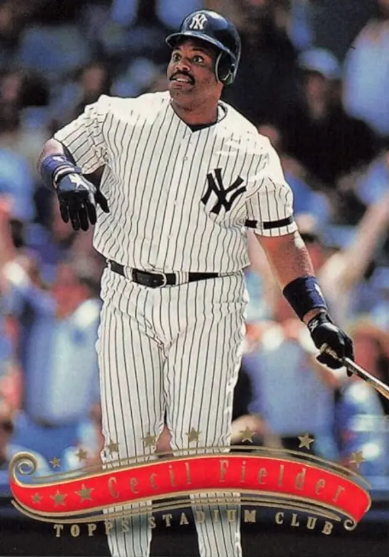

Cecil Fielder "Big Daddy"
Career Highlights & Facts
(Facts are AI-generated and may require verification)
- Achieved the rare feat of leading the major leagues in runs batted in for 3 consecutive seasons.
- Became the first player in 29 years to reach the 50 home run milestone in a single season.
- Shared a unique professional legacy as a power-hitting father whose son also finished a career with exactly 319 home runs.
Would you like to find out more about Cecil Fielder?
Player Biography
Cecil Fielder March 18, 2024 / in BioProject - Person Home Run Champions 1990s All-Stars Parent-Child / by admin This article was written by David Bilmes When the Detroit Tigers took the field at Yankee Stadium on October 3, 1990, for the final game of the regular season, it didn’t feel like a momentous event. Only 13,380 fans were present on a Wednesday night to watch the home team finish the season in last place. The Tigers, who also had a losing record, had secured third place. The eyes of the baseball world, though, were focused on the Tigers’ Cecil “Big Daddy” Fielder, who had one last chance to become the first American League player in 29 years to hit 50 home runs. Fielder, who was hitless in the first two games of the series, didn’t disappoint, hitting both his 50th and 51st home runs. It was only fitting that he accomplished the feat at the House that Ruth Built. Babe Ruth was the first player to hit 50 home runs in a season and the Yankees’ Roger Maris and Mickey Mantle had been the last AL players to reach that milestone, both doing so in 1961. The last NL player to hit 50 homers was George Foster in 1977. The 13-year drought between 50-home run seasons was the longest such span since Ruth had first hit 54 home runs in 1920. It wasn’t the first time Fielder would be linked to Ruth. A prodigious right-handed-hitting slugger, Fielder would go on to join Ruth as the only players in the 20th century to lead the majors in RBIs for three consecutive seasons. From 1990-95, no player in Major League Baseball hit more home runs (219) than Fielder did for the Tigers, during which time he twice finished a close second in the AL MVP voting. After six productive seasons for Detroit, Fielder was traded to the Yankees in 1996 and helped New York win the World Series. Fielder also played for Toronto, Anaheim and Cleveland during his 13-year (1985-88, 1990-98) career, finishing with 319 home runs. His son Prince Fielder , a fixture in the clubhouse with Cecil as a child, became a power hitter in his own right, also ending his career with 319 home runs. It wasn’t all smooth sailing though. Off the field, a bitter divorce led to a lengthy estrangement between Cecil and Prince. 1 Although Cecil denied having a gambling problem, he was sued by an Atlantic City casino for gambling debts and ordered to pay nearly $600,000. By 2024, though, Fielder’s life had settled down, as he had reconciled with Prince and remarried. Cecil (pronounced seh-cil) Grant Fielder was born in Los Angeles on September 21, 1963, to Edson and Tina (Irving) Fielder. 2 Edson Fielder, a former all-section infielder at El Centro High who ran a small janitorial service, began pitching batting practice to his oldest son while he was still a toddler. Cecil hit his first “home run” when he was three, hitting a pitch from his father over their two-story apartment building. 3 Even though the Fielders lived in Southern California, Cecil grew up a fan of Willie McCovey and the San Francisco Giants. The growing family soon moved east to suburban La Puente, where Cecil – 6-foot-1 and 175 pounds by age 13 – dominated the local Little League, including one six-inning game where he struck out 17 batters. “The parents passed around a petition saying that if Cecil pitched they wouldn’t let their children play,” Tina Fielder said, adding that they wanted her son moved into a higher age group. His sister Kaory recalled parents demanding to see Cecil’s birth certificate. 4 At Nogales High, Fielder once again drew the wrath of parents of opposing players. This time it was basketball parents who accused him of being a college player hiding on a high school team. “I guess he was just that much better than everybody else,” Tina said. 5 Although he was a three-sport star in high school, there was no doubt about which sport was Fielder’s favorite. “Basketball was the ultimate,” he said. “There was nothing I couldn’t do – shoot, pass, dunk . . . anything.” 6 Nogales only lost 10 games over his four years, going 29-0 in Fielder’s senior season before losing in the sectional finals when Fielder missed a 30-foot game-winning shot at the buzzer. 7 A local newspaper named Fielder the MVP in the San Gabriel Valley, encompassing nearly 40 high schools. 8 That season, Fielder averaged 27 points, 12 rebounds and 10 assists. 9 Fielder didn’t go out for the baseball team until his junior year. “Baseball was when I rested between basketball and football,” he said. 10 Even so, he earned All-American honors as a power-hitting first baseman his senior season. 11 Fielder was a linebacker on the football team, which featured future big-league catcher Mark Salas , later a teammate in Detroit. Fielder also played quarterback in long-passing situations. 12 He was voted Most Athletic and Most Popular his senior year, 13 and gave credit to his parents for making sure he stayed out of trouble. “They didn’t let me run with the guys, which I didn’t always understand,” he said. “But now I know it made me a better person.” 14 As much as he loved basketball, Fielder feared that his size – 6-foot-3 and 215 pounds (he got much heavier as he grew older) – would keep him from playing at the next level. 15 After all, it was far from the classic point-guard build in the early 1980s. Meanwhile, his father, a former high school baseball standout, noticed the increasingly lucrative salaries being signed by baseball free agents. 16 With his encouragement Cecil decided to pursue a baseball career, leaving the hardcourt behind. In June 1981 Fielder was drafted in the 31st round by the Baltimore Orioles. He wasn’t offered a signing bonus, however, and Orioles scout Ed Crosby advised him to “stay in school.” 17 Fielder took his advice, accepting a baseball scholarship to the University of Nevada-Las Vegas to play for coach Fred Dallimore, who said Fielder didn’t want to sign with the Orioles for “peanuts.” “He wanted a ton of money,” Dallimore said. “Then he came to town and loved UNLV.” 18 That wasn’t all Fielder loved about Las Vegas. He told Dallimore about coming to Vegas with his parents while in high school, and because of his imposing size and appearance, being able to play blackjack despite being only 15. In a portend of what was to come, Dallimore said, “I had casino managers and shift bosses calling me, saying, ‘Coach, your big first baseman is hanging out at our casino. We don’t mind that, but we think he has a gambling habit.’” 19 Fielder played well as a freshman during the 1981 fall season at UNLV, but only played in the first two games of the 1982 spring season before leaving school. “I might have been hard on him,” said Dallimore, who wanted Fielder to lose 50 pounds, putting him on a special running program. 20 It wouldn’t be the last time Fielder took umbrage at being told to lose weight. Fielder came home and spent one semester at Mount San Antonio College in nearby Walnut. In June 1982, based on the recommendation of scout Guy Hansen , Kansas City drafted him in the fourth round of the secondary draft for players who had been drafted previously but hadn’t signed. 21 The Royals gave him a $3,000 signing bonus and assigned him to their Pioneer League rookie team in Butte, Montana, where he was an instant fan favorite, hitting .322 with 20 home runs in 273 at-bats. It didn’t take long for Fielder to become a local legend. In August 1982 a surveying crew from the Montana College of Mineral Science and Technology measured a homer he hit on July 29 against Calgary as being 438 feet, the longest in the history of Butte’s Alumni Stadium. 22 Fielder led the league in homers, doubles, total bases and slugging percentage. 23 Despite Fielder’s impressive power, the Royals worried that his beefy build would prevent him from being a regular. 24 Hansen, the scout who had signed Fielder, explained, “They figured if Fielder had that kind of body at 19, what was he going to look like at 30?” 25 Kansas City, a contender in the AL West, was in trade talks with Toronto for veteran outfielder Leon Roberts , and the Blue Jays wanted either Fielder or another young first baseman, Joe Citari, in return. Citari had hit 18 home runs for Butte in 1982, but more importantly, had an impressive physique. “Citari was an Adonis,” said John Schuerholz , the Kansas City general manager at the time. “He looked like he was chiseled, a big, strong, good-looking kid.” 26 On February 5, 1983, Fielder was traded to Toronto for Roberts. The Blue Jays assigned Fielder to Florence, South Carolina, in the Class A South Atlantic League, where he drove in 94 runs and was named team MVP. When Florence played a series that summer in Greensboro, the host team had a “Get Cecil Fielder Out Night.” Any time a Greensboro pitcher kept Fielder off the bases, beer was free for the rest of the inning. It turned out to be a long wait for the free beer, as Fielder got hits in his first four at-bats before flying out. 27 In 1984 Fielder started the season with the Kinston (North Carolina) Blue Jays in the Class A Carolina League, where he hit 11 home runs in his first 20 games and 19 in the first half of the season before he was promoted to Knoxville, Tennessee, in the Class AA Southern League. Fielder stayed in Knoxville to start the 1985 season. He had 18 home runs and 81 RBIs in 96 games when, at the age of 21, he was promoted to Toronto on July 18, bypassing Triple A. Two days later Fielder got his first start and, in his first at-bat, doubled off the wall against Oakland’s Tim Birtsas . Although he only had 74 at-bats in 30 games, he hit .311 with four home runs and an .885 OPS, making an impression on his teammates, who were en route to winning 99 games and earning the franchise’s first postseason berth. “A lot of guys arrive in the majors, and they’re afraid to swing the bat,” Toronto outfielder Lloyd Moseby said. “But here was this kid straight from Double-A, and he was taking some cuts.” 28 In the ALCS, Fielder had a double in three trips to the plate as the Blue Jays lost to the Royals in seven games. Blue Jays manager Bobby Cox was impressed with Fielder, both at the plate and in the field. “He’s got great lightning wrists,” said Cox. “He can really play first base. Know who he reminds me of? George Scott when he first came up.” 29 Toronto had a new manager in 1986, Jimy Williams , and he liked what he saw when Fielder reported to spring training. Fielder, who had weighed over 230 pounds while playing winter ball in Venezuela, weighed in for Toronto at 212 pounds. “I’ve always been big,” Fielder said. “I was the biggest kid in my class when I started school.” Williams even speculated that he might give Fielder a look in left field. 30 Fielder played 38 games in left field that year, but they all came for Syracuse in the triple-A International League. He started and finished the season in Toronto, where he only had 83 at-bats in 34 games. With veteran Willie Upshaw entrenched at first base, George Bell in left field and veteran Cliff Johnson at DH, there wasn’t a clear-cut role for Fielder in Toronto. Fielder spent the entire 1987 season in Toronto, hitting 14 home runs in only 175 at-bats, including his first career walk-off, a 10th-inning pinch-hit homer on September 4 against Seattle. The Blue Jays led the AL East for much of the season but lost the division to Detroit on the final weekend. During spring training 1988 Toronto traded Upshaw to Cleveland, but Fielder remained a part-time player as rookie future Hall of Famer Fred McGriff mostly manned first, leaving Fielder to share the DH spot with Rance Mulliniks . To get more at-bats, Fielder played winter ball for several seasons with Cardenales de Lara of the Venezuelan League, where he hit .389 to win the batting title in 1987-88. 31 Fielder had 31 home runs and 84 RBIs in 506 at-bats during his four seasons in Toronto. But despite his productivity in limited playing time, the Blue Jays felt that McGriff was their long-term answer at first base, and Toronto wanted to give Bell, the 1987 AL MVP, some at-bats at DH. Fielder’s weight also caused him to clash with his manager, as Williams insisted that he should play at 215 pounds and made him run laps around the outfield with the pitchers. Fielder felt his ideal weight was between 225 and 240 pounds. 32 “When I got to 215, I felt so weak that it hurt me more than helped me,” Fielder said. 33 Instead of keeping a frustrated Fielder, the Blue Jays, with Fielder’s consent, worked out a deal to sell him to the Hanshin Tigers of the Japan Central League for $750,000. 34 “They didn’t like my body,” Fielder said of the Blue Jays, “They thought I was too big to play every day.” Toronto GM Pat Gillick later admitted that his club made a mistake. “We would have never sold Cecil to Japan if we had been that high on him,” he said. “If you want to say we mis-evaluated you can, but he never really figured in our plans. 35 Going to Japan was a gamble for Fielder, who at 25 was the youngest American to sign a Japanese contract. He also had to adjust to the Japanese baseball routine, which included extended pre-game workouts and drills along with lots of conditioning and calisthenics. But he wasn’t going to turn down a salary of $1,000,050, especially since his top salary in Toronto had been $125,000. It didn’t help matters when Fielder got off to a slow start, earning a derisive nickname which translated into “the big electric fan.” “Every day there was a picture in the paper of Cecil striking out,” said Matt Keough , another American playing for Hanshin in 1989. 36 Once Fielder settled in, though, he quickly became a fan favorite. His 500-foot homer at the Tokyo Dome was the first to reach the back of the stadium, bouncing off a King Kong poster. “I hit the monkey in the leg,” Fielder said. In Yokohama, he became the first player to hit two balls out of the stadium in the same game. 37 Fielder missed the final month of the season with a broken finger, but still led the league in slugging and hit 38 home runs in only 384 at-bats. “A lot of people say that going to Japan is just a money thing,” said Moseby. “But Cecil looked at baseball in Japan as if it was the big leagues. Most guys who go over there get paid a lot and just act lackadaisical about the playing thing. Cecil went over there to play ball.” 38 Even with his success, Fielder worried about his long-term security. Another American playing in Japan, Larry Parrish , had just been released despite hitting a league-leading 42 home runs. 39 Fielder exercised the escape clause in his contract, and Hanshin let him go, gambling that no MLB team would pay big bucks to an American returning from Japan. 40 Fielder only had two suitors – Detroit and Boston. The Tigers, who were 59-103 in 1989, had already failed in their efforts to sign free agents Pete O’Brien and Kent Hrbek , while the Red Sox needed a first baseman to replace free agent Nick Esasky . Detroit sent scout Jerry Walker to size Fielder up. “Jerry needed only 10 minutes to see what kind of young man Cecil was,” said Tigers GM Bill Lajoie , who signed Fielder to a two-year contract for $3 million. 41 That didn’t earn Lajoie many fans among his fellow GMs, who thought he was overpaying a player with so little experience. For his part, Fielder was just happy to feel wanted. “My agent said the Tigers were horrible, they really need some help and that I would be able to play every day,” Fielder said. “Plus, they had Sparky Anderson and I really wanted to play for him.” 42 The contract turned out to be a bargain for the Tigers. In 1990, his first year in Detroit, Fielder had 51 home runs and 132 RBIs. The Blue Jays had a first-hand look at his success, as Fielder hit seven home runs against them, including three in one game during his first series back in Toronto. In July he played in the All-Star Game at Wrigley Field . On August 25, his titanic home run off Oakland ace Dave Stewart made Fielder the first Tiger and only the third player to clear the left-field roof at Tiger Stadium . Stewart later said it was the longest home run he ever gave up. 43 Heading into a season-ending three-game series at Yankee Stadium, Fielder had 49 home runs. Anderson moved him up to the number-two spot in the batting order so he would have more chances to get number 50. Feeling the pressure, Fielder went 0-for-8 over the first two games, striking out five times. A pre-game pep talk from his wife Stacey helped him relax before the season finale. “She said if I didn’t get it, I still had a great year,” Fielder said. “That took a lot of the pressure off.” It also helped that Yankees starter Steve Adkins wanted to go after the Tigers slugger. “I didn’t want to walk him,” Adkins said. “He had a chance at a great record. It wouldn’t be very sporting of me if I didn’t throw the ball so he had a shot at it.” 44 Despite Adkins’ best intentions, Fielder walked his first time up. But in the fourth inning, he sent a two-run blast into the upper deck in left field. As the ball left the park, Fielder jumped up and down outside the batter’s box, saying, “I did it, I did it.” 45 He then added a three-run homer in the eighth inning. In addition to his 51 homers and 132 RBIs, Fielder scored 104 runs, led the majors in slugging (.592), and led the AL in total bases (339) and extra-base hits (77). He helped the Tigers win 79 games, an improvement of 20 games from the previous season. He finished second to Oakland’s Rickey Henderson in the MVP voting, and also won a Silver Slugger. The next season, Fielder proved his success was no fluke. Once again he led the AL in homers (44) and RBIs (133), becoming the first AL player to lead the league in both categories two seasons in a row since Jimmie Foxx in 1932 and 1933. Listed at 6-foot-3, 270 pounds, Fielder was also one of only three players in MLB to play in every game in 1991. He was a starter in the All-Star Game in Toronto, and on September 14 hit a ball out of County Stadium in Milwaukee. 46 He led the Tigers to second place in the AL East, and again placed a close second in the MVP voting, this time to Baltimore’s Cal Ripken Jr . Fielder also won his second consecutive Silver Slugger award. Fielder avoided arbitration by signing a one-year contract for 1992 for $4.5 million, the highest salary by an arbitration-eligible player. He went on to lead the majors in RBIs (124) for the third straight season, a feat previously accomplished in the AL only by Ruth. 47 Fielder was eligible to become a free agent after the season, but there was no way the Tigers were going to let him walk. The team’s new owner, Mike Ilitch, opened up his checkbook to give Fielder a five-year contract for $36 million, making him the second highest-paid player in baseball behind only Barry Bonds . “It’s a good feeling,” Fielder said. “It’s peace of mind.” 48 Over the next three seasons, Fielder continued to produce big power numbers, keeping his OPS above .800, but the Tigers slid back into mediocrity. On July 2, 1993, Fielder hit a ball onto the left-field roof at Tiger Stadium, after which Anderson said, “It would have been a home run in heaven.” 49 Fielder was also named an All-Star for the third time. Fielder was MLB’s highest-paid player in both 1995 and 1996, earning $9.2 million in each year. In 1996 he was having another productive season through 107 games, with 26 home runs and 80 RBIs, as well as the only two stolen bases of his career. 50 At the trade deadline, with the Tigers owning the worst record in the majors (35-72), Fielder requested a trade. The Yankees, leading the AL East by 10 games, wanted an upgrade over Rubén Sierra at DH, and were happy to send Sierra and pitching prospect Matt Drews to Detroit in exchange for Fielder. “I liked my time in Detroit, but I wanted to win, so I was thrilled to go to the Yankees,” Fielder said. 51 Fielder’s 13 home runs over the final two months – including two two-homer games – helped the Yankees hold off the surging Orioles. In the postseason Fielder showed a knack for coming up with big hits. During the ALCS against Baltimore he was only 3-for-18, but had two home runs and 8 RBIs, including a three-run homer in Game 5 to give the Yankees a 5-0 lead in the third inning of an eventual series-clinching 6-4 win. His World Series slash line against the Braves was .391/.440/.478, and he drove in the only run of Game Five. The Yankees went on to win the Series in six games and Fielder won the Babe Ruth Award, given to the best player in the postseason. A thumb injury limited Fielder to 98 games in 1997, and he tailed off to 13 home runs, although on April 26 he did have the only five-hit game of his career. Fielder returned to the lineup in mid-September and went 1-for-8 in the ALDS as the Yankees lost to Cleveland. A free agent after the season, Fielder signed with the Angels for one year for $2.8 million. There was no Hollywood ending, though, as the Angels released him in August 1998. Fielder, who had 17 homers and 68 RBIs, said the Angels violated a “gentleman’s agreement” with his agent for incentives on certain goals, which he was nearing. 52 Fielder, who had batted just .211 (22-for-104) in his final 26 games with the Angels, signed three days later with Cleveland, which needed a replacement at first base for the injured Jim Thome . That didn’t work out either, as Fielder was just 5-for-35 without an RBI, and lost playing time to Richie Sexson . Fielder was released in September once Thome returned. 53 But Fielder, 35, wasn’t ready to retire. First, he tried to hook up with Detroit for 1999. “We haven’t told him ‘no,’” said Detroit GM Randy Smith. 54 That didn’t mean “yes” either, and Fielder ended up going to spring training with another of his former teams, Toronto. Despite leading the Blue Jays in HRs and RBIs in spring training, Fielder was released on March 31 after Toronto acquired Dave Hollins . Fielder subsequently retired, ending his career with a .255 average, 1008 RBIs and an .827 OPS in 1,470 games. Just like his career, Fielder’s retirement had its share of ups and downs. He and Stacey, who had met in high school and married in 1983, and their two children – Prince and Ceclynn – settled into their Space Coast mansion in Florida. The 50-room, $3.7 million dream home was the largest residence in the county. But despite career earnings of $47 million, Fielder and his family eventually lost their home. 55 In 1999, the year he retired, Fielder ran up a debt of $580,000 in a 40-hour gambling binge in Atlantic City. He was later sued by Trump Plaza Hotel and Casinos and ordered to pay them $563,359. The lawsuit over the gambling was first reported by the Detroit News in 2004, which also said that Fielder’s gambling problems played a role in his contentious divorce. In addition to his gambling debts, Fielder had lawsuits and liens worth millions of dollars filed against him. “This isn’t the same Cecil,” Stacey said. “I never saw any of this coming.” 56 Fielder sued Gannett, the parent company of the Detroit News , and the reporter who broke the story, for $25 million in damages for defamation of character. Those suits were thrown out. Through it all, Fielder continued to insist he didn’t have a gambling problem, instead blaming the casino for cashing in on his fame by bringing in friends for free and letting him run up a big line of credit. “Gambling has never been a temptation for me,” Fielder said. 57 Fielder’s off-the-field problems continued to become public as Prince, Milwaukee’s first-round draft pick in 2002, was establishing himself as a bonafide power hitter. As a child, Prince had wrestled with his father’s teammates, taken batting practice with them, and appeared in commercials with Cecil. But now he accused Cecil of taking $200,000 of his $2.4 million signing bonus from the Brewers and sided with Stacey in the divorce. “My father is dead to me,” he told the Detroit News in 2004. In response, Cecil claimed he was just taking a percentage for helping negotiate the bonus. 58 It took eight years for Cecil and Prince to reconcile. In 2016 Prince’s career was cut short by a neck injury which forced him to stop playing after 12 seasons in the majors, including two in Detroit. “If he hadn’t gotten hurt, he would have been a 500-homer guy,” Cecil said. 59 In the meantime Fielder had one-year stints managing independent teams in Florida and New Jersey. He made a rare return to Detroit in 2022, when he was honored by the Tigers. 60 As of 2024 Fielder lived in Tampa with his second wife Diana and their son Maksim. He had four other children and four grandchildren. His son Grant was a walk-on football player at Florida State. 61 Last revised: March 18, 2024 Acknowledgments This biography was reviewed by Malcolm Allen and Rick Zucker and checked for accuracy by members of SABR’s fact-checking team. Also, thanks to Cassidy Lent at the Giamatti Research Center, National Baseball Hall of Fame and Museum, Cooperstown, NY. Sources In addition to sources cited in the Notes, the author consulted www.baseball-reference.com Photo credit (top): SABR-Rucker Archive, (side): Trading Card Database. Notes 1 Albert Chen, “Turbulent heir,” Sports Illustrated , May 28, 2007: 35. 2 Richard Hoffer, “Big Daddy: What a season it has been for Cecil Fielder, the reigning king of home runs, and his young prince,” Sports Illustrated, September 30, 1991. https: , (last accessed December 26, 2023). 3 Peter de Jonge, “The slugger nobody wanted,” New York Times, April 5, 1992, Section 6, 20. https://www.nytimes.com/1992/04/05/magazine/the-slugger-nobody-wanted.html (last accessed December 25, 2023). 4 de Jonge, “The slugger nobody wanted.” 5 Mike Lupica, “The year of living famously: The Fielder phenomenon belies a T-shirt kind of guy,” Detroit Free Press, Sept. 25, 1990 https: (last accessed January 2, 2024). 6 Ross Newhan, “Fielder is really a hitter. Detroit’s latest import from Japan putting up impressive numbers,” Los Angeles Times, June 5, 1990: C1, https://www.latimes.com/archives/la-xpm-1990-06-05-sp-615-story.html , (last accessed December 25, 2023). 7 Hoffer, “Big Daddy: What a season it has been for Cecil Fielder, the reigning king of home runs, and his young prince.” 8 de Jonge, “The slugger nobody wanted.” 9 Pete McEntegart, “Whack daddy: The onetime power potentate has spawned the Mighty Prince, a Brewers first rounder and possible heir apparent to his father’s home run crown,” Sports Illustrated, July 15, 2002: 94. 10 Newhan, “Fielder is really a hitter.” 11 Stephen Ramirez, “John Romano set to end his legacy at Nogales High School,” San Gabriel Valley (California) Tribune, August 30, 2017, https: (last accessed January 2, 2024). 12 “Detroit’s Japanese ‘import,’ season overseas puts Fielder back in the groove,” USA Today, June 8, 1990. 13 Hoffer, “Big Daddy: What a season it has been for Cecil Fielder, the reigning king of home runs, and his young prince.” 14 USA Today, “Detroit’s Japanese import.” 15 de Jonge, “The slugger nobody wanted.” 16 Newhan, “Fielder is really a hitter.” 17 McEntegart, “Whack daddy: The onetime power potentate has spawned the Mighty Prince, a Brewers first rounder and possible heir apparent to his father’s home run crown.” 18 Rob Miech, “The short UNLV baseball career of slugger Cecil Fielder,” Las Vegas Sun, August 5, 2008 https: (last accessed January 2, 2024). 19 Miech, “The short UNLV baseball career of slugger Cecil Fielder.” 20 Miech, “The short UNLV baseball career of slugger Cecil Fielder.” Fielder went 3-for-8 with a double and an RBI in two games against Chico State. Because he played in at least one game, he was listed as a letter winner. 21 Newhan, “Fielder is really a hitter.” 22 “Tale of the tape measure,” The Sporting News, August 23, 1982: 36; “Kings Rally, 9-7,” Montana Standard (Butte), July 30, 1982: 6. 23 “The Toronto Blue Jays have acquired designated hitter-first baseman,” United Press International, February 5, 1983 https: (last accessed January 25, 2024). 24 McEntegart, “Whack daddy: The onetime power potentate has spawned the Mighty Prince, a Brewers first rounder and possible heir apparent to his father’s home run crown.” 25 de Jonge, “The slugger nobody wanted.” 26 de Jonge, “The slugger nobody wanted.” Citari never reached the majors and never hit more than 23 home runs in a season in the minors. Roberts played in 112 games for Kansas City over the next two seasons, batting .252 with eight home runs and 27 RBIs. 27 de Jonge, “The slugger nobody wanted.” Fielder said he thought the promotion was racially motivated so the mostly white crowd could cheer against a Black. But he enjoyed the challenge. “I said, ‘You want to get me out, come on.’ … They weren’t going to drink off me.” 28 de Jonge, “The slugger nobody wanted.” 29 United Press International, “The Blue Jays purchased a fielder – but what they got was a hitter,” Los Angeles Times, September 15, 1985, https://www.latimes.com/archives/la-xpm-1985-09-15-sp-23416-story.html (last accessed January 5, 2024). George Scott won eight Gold Gloves. 30 Neil MacCarl, “Fielder leads Battle of the Bulge,” The Sporting News, March 17, 1986: 39. 31 Jose Aureloviasan, ”Do you remember Cecil Fielder with the Cardinals in the LVBP?,”El-Fideo.com, January 4, 2023, https: (last accessed February 15, 2024) 32 Hoffer, “Big Daddy: What a season it has been for Cecil Fielder, the reigning king of home runs, and his young prince.” 33 Dave Hanson, “Fielder of Dreams,” New York Post , May 25, 1990: 78. 34 de Jonge, “The slugger nobody wanted.” 35 Newhan, “Fielder is really a hitter.” Fielder had nothing but praise for the way the Blue Jays handled his departure. “I never hesitated when they came to me with it. I mean, it was something they didn’t have to do, but it’s a class organization. I have no bitterness or hard feelings toward the Blue Jays.” 36 de Jonge, “The slugger nobody wanted.” 37 de Jonge, “The slugger nobody wanted.” 38 Albert Kim, “Remade in Japan,” Sports Illustrated, May 14, 1990, https://vault.si.com/vault/1990/05/14/remade-in-japan (last accessed Jan. 6, 2024). 39 Mike Lupica, “The year of living famously: The Fielder phenomenon belies a T-shirt kind of guy.” Parrish ended up replacing Fielder on the Hanshin Tigers. 40 de Jonge, “The slugger nobody wanted.” 41 Hanson, “Fielder of Dreams.” The Red Sox, meanwhile, ended up starting the season with Billy Jo Robidoux as their first baseman. 42 Bill Dow, “Cecil Fielder became a Detroit Tigers superstar, thanks to Sparky Anderson’s positivity,” Detroit Free Press, May 25, 2020, https: , (last accessed January 7, 2024). 43 Bill Dow, ”Detroit Tigers’ Cecil Fielder became a HR superstar with Tiger Stadium roofshot 30 years ago,” Detroit Free Press, May 27, 2020 https: (last accessed February 16, 2024). Earlier in the game, Fielder hit his 40th HR, making him only the fourth Tiger to reach that milestone. Oakland’s ”Bash Brothers,” Mark McGwire and José Canseco , hit back-to-back home runs in the first inning The only hitters who had previously cleared the roof were Harmon Killebrew (1962) and Frank Howard (1968). McGwire hit one over the roof in 1997. 44 Terry Egan, “Fielder finally hits it big with homers 50 and 51,” The National, October 5, 1990, 13. 45 Egan, “Fielder finally hits it big with homers 50 and 51.” 46 Nelson ‘Chip’ Greene, “September 14, 1991: When Cecil Fielder’s home run left the ballpark,” SABR Games Project, 2016. https: (last accessed Feb. 16, 2024). Fielder’s blast came off Dan Plesac in a 6-4 Detroit victory. The next day, a member of the Brewers’ scoreboard crew, brought to the park a copy of The Sporting News dated June 17, 1959, which contained a story crediting Orlando Cepeda of the San Francisco Giants with hitting a home run on June 4 which cleared the left-field stands at County Stadium, travelling an estimated 500 feet. 47 Herb Krabbenhoft, “The accurate RBI record of Babe Ruth,” SABR Baseball Research Journal, Spring 2013, https://sabr.org/journal/article/the-accurate-rbi-record-of-babe-ruth/ (last accessed Feb. 16, 2024). Fielder also joined Ty Cobb and Ruth as the only players to lead the AL in RBIs for three straight seasons. Cobb led the league in RBIs prior to it becoming an official statistic in 1920. Ernie Lanigan, a sportswriter, unofficially tabulated RBIs from 1907-19. Dating back to an earlier era, Cap Anson twice led the major leagues in RBIs three years in a row (1880-82 and 1884-86). 48 Associated Press, “Fielder agrees to $36 million, 5-year contract,” Deseret News (Salt Lake city, Utah) , January 8, 1993, https: (last accessed January 10, 2024). 49 Mike Bertha, ”#TBT, Cecil Fielder blasts a HR onto the roof at Tiger Stadium,” MLB.com , July 2, 2015, https: (last accessed February 16, 2024). 50 Jason Foster, “Let’s pause to remember the anniversary of Cecil Fielder’s first stolen base,” The Sporting News, April 2, 2018, https: (last accessed Feb. 16, 2024). Fielder stole the first base of his career on April 2, 1996, in the Tigers’ second game of the year, stealing second in the ninth inning with the Tigers ahead 9-6. Fielder ended up scoring the final run in a 10-6 victory. Even though the game was in Minnesota, the crowd of 20,164 gave him a standing ovation as he tipped his cap. It was Fielder’s 1097th game. He had been 0-for-5 in his previous career steal attempts. He added another steal on July 3 against Milwaukee. Fielder only attempted one more stolen base in his career. 51 Dow, “Cecil Fielder became a Detroit Tigers superstar, thanks to Sparky Anderson’s positivity.” Drews, the Yankees’ first-round pick in 1993, never made it past Triple A. Some of his minor league season won-lost records were 1-14, 5-17 and 2-14. 52 “Cecil takes parting shot at ‘crazy’ Angels management,” New York Post, August 15, 1998. “I had the opportunity to drive in 100 runs.” Fielder said. “I’ve seen some crazy things in baseball. This is one of the craziest ever.” 53 “Indians release Cecil Fielder,” CBSNews.com , September18, 1998, https://www.cbsnews.com/news/indians-release-cecil-fielder/ (last accessed Jan. 10, 2024). 54 “Fielder may return,” New York Times, December 4, 1998: D7. https:?ref=cecilfielder (last accessed January 10, 2024). 55 Chen, “Turbulent heir.” Fielder married Stacey Lynn Granger on Nov. 7, 1983, when she was 18. In 1994 Stacey became the first Black woman to be crowned Mrs. Michigan. Four of the unsuccessful contestants subsequently sued the pageant, claiming it was rigged to allow Stacey to win. In 1997 Fielder left the Yankees for several days in midseason when Stacey was on trial in Florida for interfering with police after her 10-year-old step-daughter was in a traffic accident. An all-white jury found her guilty of obstruction. “You don’t want to say we have a racial problem at hand, but you look at it and it doesn’t look good,” Fielder said. 56 Fred Girard, “From riches to rags: Fielder’s life of luxury crumbles under crux of gambling debts,” Salt Lake City Tribune , October 27, 2004, https://archive.sltrib.com/story.php?ref=/sports/ci_2434381 (last accessed January 17, 2024). 57 Don Campbell, “All in at Atlantic City; Former slugger Cecil Fielder, in a bid to build a managerial career, has returned to the very place where his gambling caught up to him,” Ottawa Citizen , May 28, 2008: B1. 58 Chen, “Turbulent heir.” 59 Dow, “Cecil Fielder became a Detroit Tigers superstar, thanks to Sparky Anderson’s positivity.” 60 Campbell, ”Tigers celebrate 20th annual Negro Leagues Weekend,” Illitch Companies News Hub, June 15, 2022, https: (last accessed January 17, 2024). Fielder received the Willie Horton African American Legacy Award. 61 Dustin Lewis, “Seminoles bringing in multiple preferred walk-ons that turned down scholarships to sign with FSU,” SI.com , February 2, 2023. Full Name Cecil Grant Fielder Born September 21, 1963 at Los Angeles, CA (USA) Stats Baseball Reference Retrosheet If you can help us improve this player’s biography, contact us . Tags Home Run Champions · 1990s All-Stars · Parent-Child · Share this entry Share on Facebook Share on X Share on LinkedIn Share on Reddit Share by Mail
Career Totals
| WAR | AB | H | HR | BA | R | RBI | SB | OBP | SLG | OPS | OPS+ |
|---|---|---|---|---|---|---|---|---|---|---|---|
| 17.2 | 5157 | 1313 | 319 | .255 | 744 | 1008 | 2 | .345 | .482 | .827 | 119 |
Statistics via Baseball-Reference.com
The Original Clue